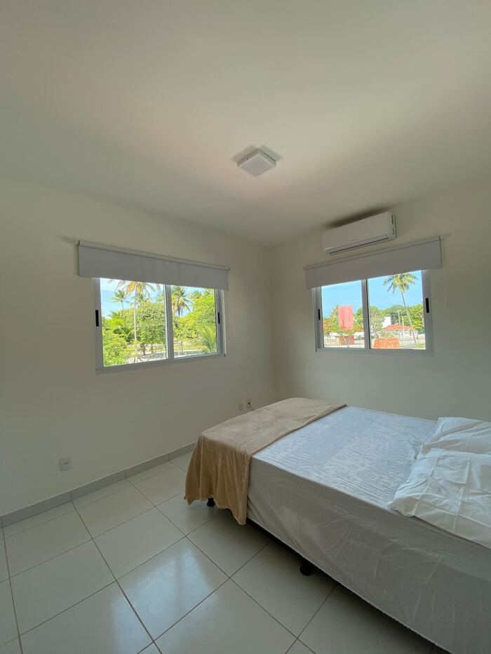
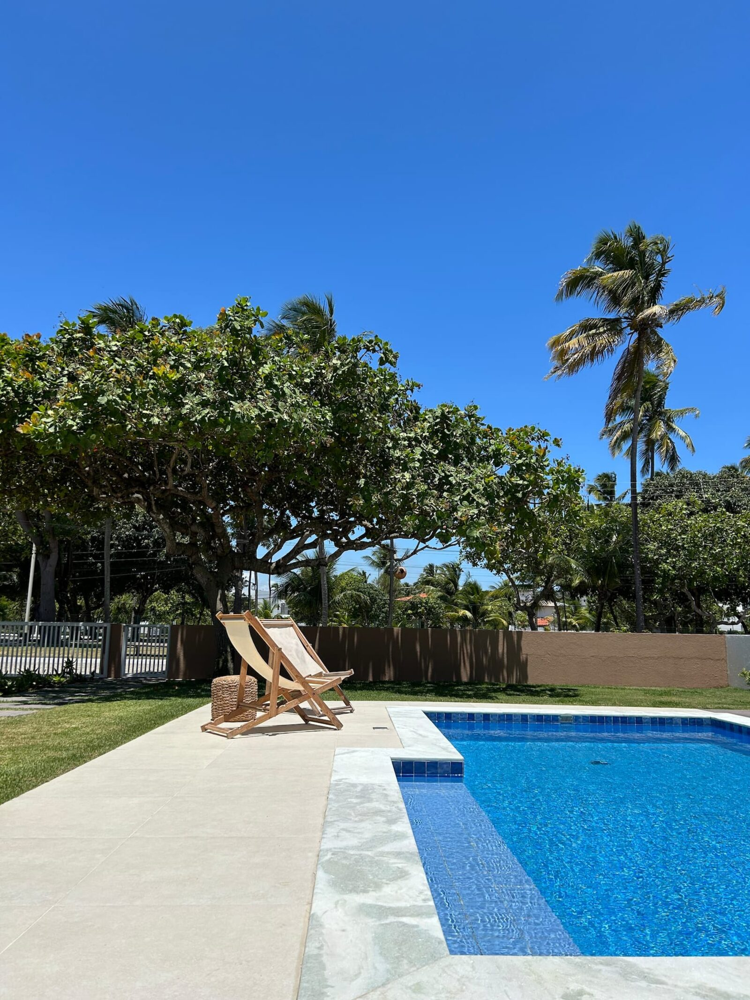
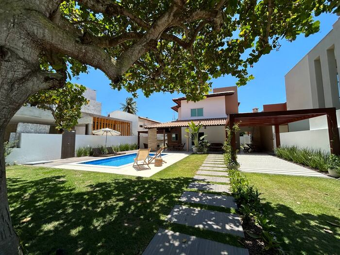
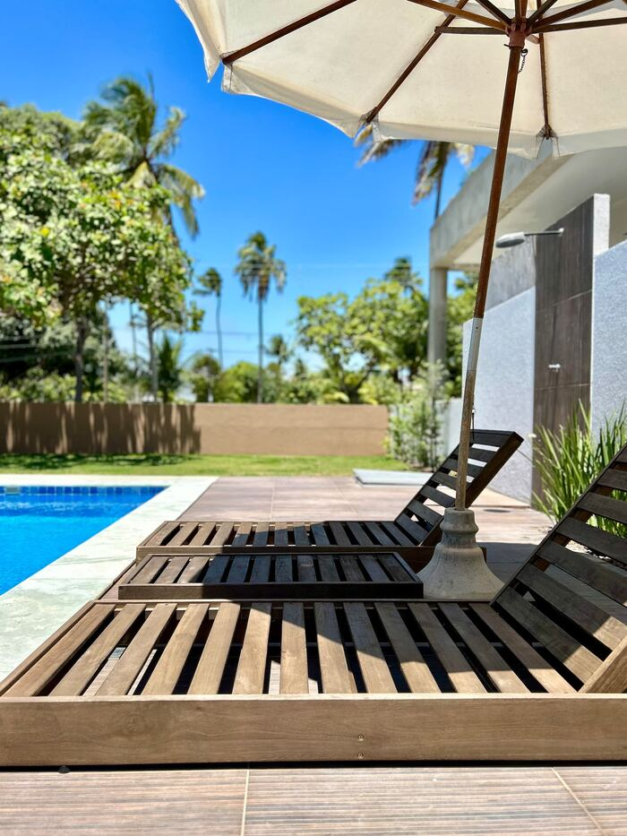
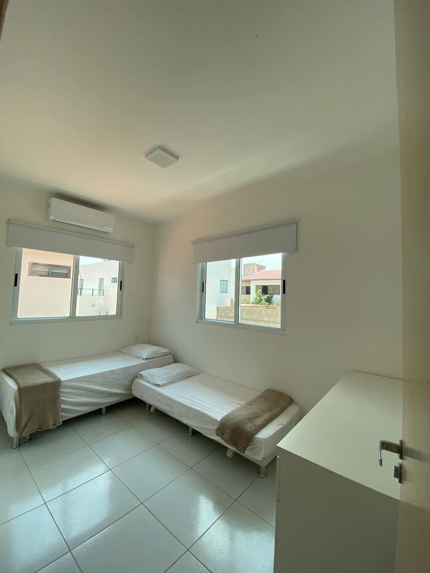
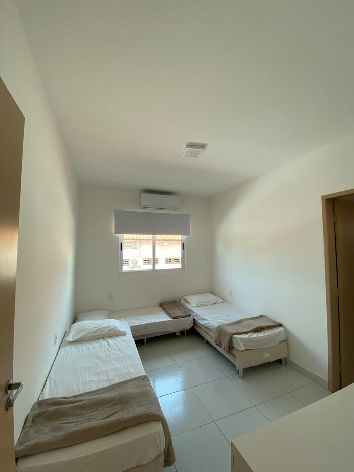
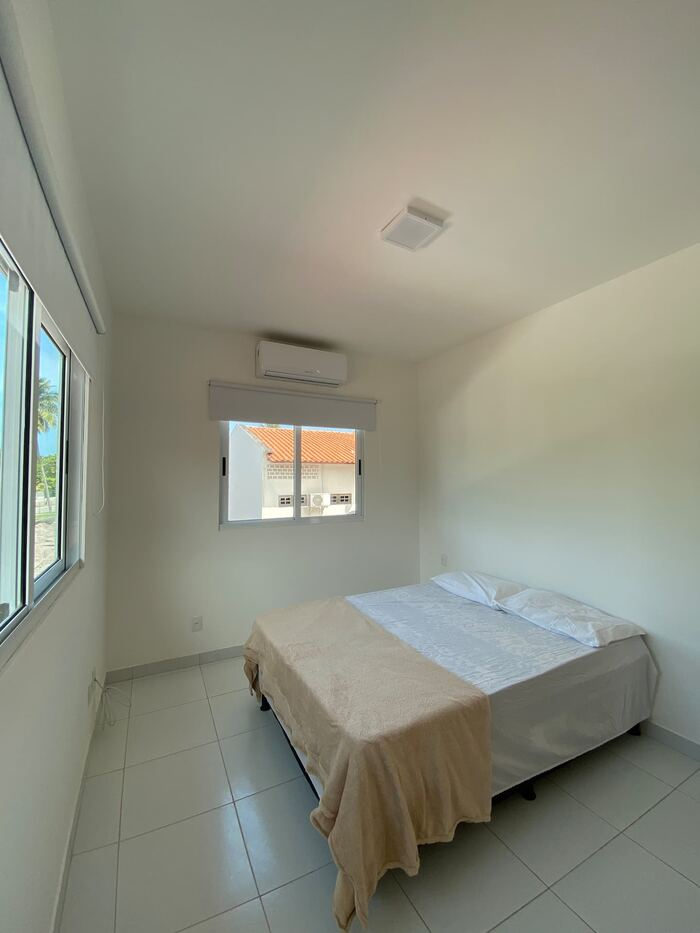
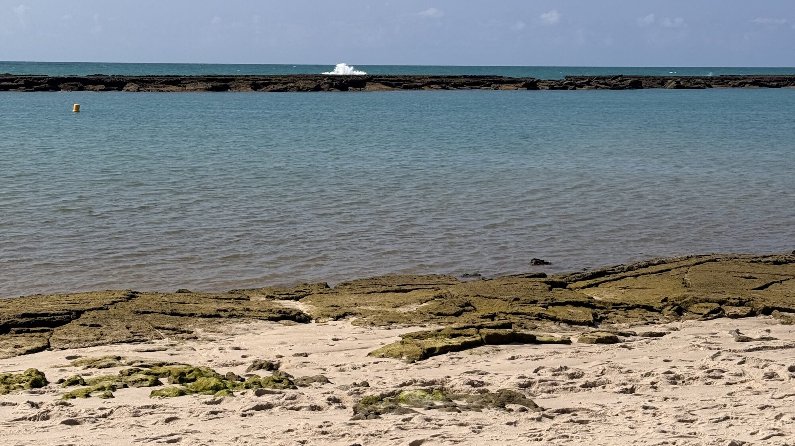

Bedroom 1
1 double bed · 1 single bed
Air conditioning · private bathroom

Barra de São Miguel · Alagoas, Brazil
Your beach house with a pool, 400 m from the sea — in a gated community with 24-hour security.
★ 4.79 · 19 guest reviews
Welcome
A great house in a gated community with 24-hour security, just 400 metres from the beach. Large leisure area with a private pool, barbecue, covered veranda and garage — and the community also has a sports court and a football field in its shared grounds.
Every bedroom is en suite, with air conditioning and its own bathroom. Outdoors there is an extra powder room with a urinal, handy for whoever is by the pool. The kitchen is fully equipped, with everything you need to cook. It sleeps up to 10 people comfortably — and pets are welcome.


Gallery
From the pool to the fully equipped kitchen: tap any photo to enlarge.
Where you will sleep

1 double bed · 1 single bed
Air conditioning · private bathroom

2 single beds
Air conditioning · private bathroom

3 single beds
Air conditioning · private bathroom

1 double bed
Air conditioning · private bathroom
Every bedroom is en suite, with air conditioning and a private bathroom. Outdoors there is also a powder room with a urinal, next to the pool.
Amenities
Location
One of the prettiest beaches on the southern coast of Alagoas, with calm water sheltered by reefs and natural pools at low tide — ideal for families with children.
A few minutes from the house you will find seafood restaurants, beach bars, boat trips to Praia do Gunga and the mouth of the São Miguel river. It is the ideal base for exploring the southern coast of Alagoas without giving up the quiet of a gated community.
The exact address is shared by the host once the booking is confirmed.
What to do nearby
Barra de São Miguel is where the Roteiro lagoon, the Niquim river and the Atlantic Ocean meet. You can spend all day in the water — and still have plenty left to fill a week.

The postcard of the southern coast, between the cliffs and the river mouth. Go by boat or by buggy across the dunes.
Where the Niquim river, the Roteiro lagoon and the open sea mix. Calm, clear, shallow water.
A preserved mangrove ecosystem, home to the largest oyster farm in northeastern Brazil.
At low tide the reefs form warm-water pools a few metres from the sand — perfect with children.
Kitesurfing, diving and stand-up paddleboarding. The open sea has waves; the lagoon stays flat all year.
Oysters from the reserve, fresh fish and Alagoas cooking in the restaurants and beach bars by the sea.
Reviews
“A comfortable house with everything you need, inside a community with plenty to do. The host was very helpful and quick to reply.”
Lygia Maria · February 2026
“Wonderful communication before and during the stay! Spotless house and a great location.”
Luana · January 2026
“Absolutely worth it! Such a cosy house. Great host, always quick to reply. Exactly as described! In a safe community with things for children to do.”
Paula · January 2025
“The stay was great!! The house is very pleasant! I plan to come back!!!”
Zélia · April 2026
“Excellent value for money!”
Thiago · January 2025
“Well located house, and it gets the morning sun!”
Thiago · January 2025
Frequently asked questions
The house sleeps up to 10 guests in 4 en-suite bedrooms, with 8 beds in total. Every bedroom has air conditioning and its own bathroom, and there is an extra powder room with a urinal outdoors.
Just 400 metres to Barra de São Miguel beach, a walk of a few minutes. The house is in a gated community with 24-hour security.
Yes. The house has a private pool, plus a large leisure area with a barbecue, covered veranda, fenced yard and garage.
Yes, pets are welcome at Casa Canária.
You book directly with us on WhatsApp at +55 82 99976-7094. Just message us with your dates and we will confirm availability and terms.
Check-in from 12:00 and check-out by 12:00.
Barra de São Miguel is about 35 km from Maceió and its Zumbi dos Palmares airport, and a few minutes from Praia do Gunga, reached by boat or buggy.
Message us on WhatsApp to check available dates and nightly rates. We reply fast.
You deal directly with the owners — no platform fees.